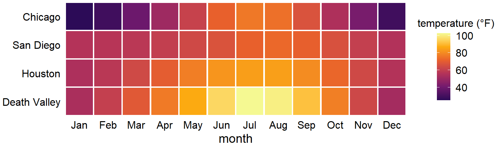

L2: Fundamentals of Data Visualization
These slides and figures were taken or adapted from ‘Fundamentals of Data Visualization’ by Claus O. Wilke.
The key insight is the following: All data visualizations map data values into quantifiable features of the resulting graphic. We refer to these features as aesthetics.
Commonly used aesthetics in data visualization: position, shape, size, color, line width, line type. Some of these aesthetics can represent both continuous and discrete data (position, size, line width, color) while others can usually only represent discrete data (shape, line type).
(ref:common-aesthetics)
All aesthetics fall into one of two groups: Those that can represent continuous data and those that can not.
| Type of variable | Examples | Appropriate scale | Description |
|---|---|---|---|
| quantitative/numerical continuous | 1.3, 5.7, 83, 1.5x10-2 | continuous | Arbitrary numerical values. These can be integers, rational numbers, or real numbers. |
| quantitative/numerical discrete | 1, 2, 3, 4 | discrete | Numbers in discrete units. These are most commonly but not necessarily integers. For example, the numbers 0.5, 1.0, 1.5 could also be treated as discrete if intermediate values cannot exist in the given dataset. |
| qualitative/categorical unordered | dog, cat, fish | discrete | Categories without order. These are discrete and unique categories that have no inherent order. These variables are also called factors. |
| qualitative/categorical ordered | good, fair, poor | discrete | Categories with order. These are discrete and unique categories with an order. For example, “fair” always lies between “good” and “poor”. These variables are also called ordered factors. |
| date or time | Jan. 5 2018, 8:03am | continuous or discrete | Specific days and/or times. Also generic dates, such as July 4 or Dec. 25 (without year). |
| text | The quick brown fox jumps over the lazy dog. | none, or discrete | Free-form text. Can be treated as categorical if needed. |
To examine a concrete example of these various types of data, take a look at this
| Month | Day | Location | Station ID | Temperature |
|---|---|---|---|---|
| Jan | 1 | Chicago | USW00014819 | 25.6 |
| Jan | 1 | San Diego | USW00093107 | 55.2 |
| Jan | 1 | Houston | USW00012918 | 53.9 |
| Jan | 1 | Death Valley | USC00042319 | 51.0 |
| Jan | 2 | Chicago | USW00014819 | 25.5 |
| Jan | 2 | San Diego | USW00093107 | 55.3 |
| Jan | 2 | Houston | USW00012918 | 53.8 |
| Jan | 2 | Death Valley | USC00042319 | 51.2 |
| Jan | 3 | Chicago | USW00014819 | 25.3 |
| Jan | 3 | San Diego | USW00093107 | 55.3 |
| Jan | 3 | Death Valley | USC00042319 | 51.3 |
| Jan | 3 | Houston | USW00012918 | 53.8 |
(ref:basic-scales-example)
(ref:temp-normals-vs-time)
Monthly normal mean temperatures for four locations in the U.S. Data source: NOAA
(ref:four-locations-temps-by-month)
Fuel efficiency versus displacement, for 32 cars (1973–74 models). This figure uses five separate scales to represent data: (i) the x axis (displacement); (ii) the y axis (fuel efficiency); (iii) the color of the data points (power); (iv) the size of the data points (weight); and (v) the shape of the data points (number of cylinders). Four of the five variables displayed (displacement, fuel efficiency, power, and weight) are numerical continuous. The remaining one (number of cylinders) can be considered to be either numerical discrete or qualitative ordered. Data source: Motor Trend, 1974.
(ref:mtcars-five-scale)
To make any sort of data visualization, we need to define position scales, which determine where in a graphic different data values are located.
We cannot visualize data without placing different data points at different locations, even if we just arrange them next to each other along a line.
For regular 2d visualizations, two numbers are required to uniquely specify a point, and therefore we need two position scales. These two scales are usually but not necessarily the x and y axis of the plot.
We also have to specify the relative geometric arrangement of these scales. Conventionally, the x axis runs horizontally and the y axis vertically, but we could choose other arrangements. For example, we could have the y axis run at an acute angle relative to the x axis, or we could have one axis run in a circle and the other run radially.
The combination of a set of position scales and their relative geometric arrangement is called a coordinate system.
(ref:cartesian-coord)
Daily temperature normals for Houston, TX. Temperature is mapped to the y axis and day of the year to the x axis. Parts (a), (b), and (c) show the same figure in different aspect ratios. All three parts are valid visualizations of the temperature data. Data source: NOAA.
(ref:temperature-normals-Houston)
Population numbers of Texas counties relative to their median value. Select counties are highlighted by name. The dashed line indicates a ratio of 1, corresponding to a county with median population number. The most populous counties have approximately 100 times more inhabitants than the median county, and the least populous counties have approximately 100 times fewer inhabitants than the median county. Data source: 2010 Decennial U.S. Census.
(ref:texas-counties-pop-ratio-log)
Population sizes of Texas counties relative to their median value. By displaying a ratio on a linear scale, we have overemphasized ratios > 1 and have obscured ratios < 1. As a general rule, ratios should not be displayed on a linear scale. Data source: 2010 Decennial U.S. Census.
(ref:texas-counties-pop-ratio-lin)
There are three fundamental use cases for color in data visualizations:
Example qualitative color scales. The Okabe Ito scale is the default scale used throughout this book. The ColorBrewer Dark2 scale is provided by the ColorBrewer project. The ggplot2 hue scale is the default qualitative scale in the widely used plotting software ggplot2.
(ref:qualitative-scales)
Population growth in the U.S. from 2000 to 2010. States in the West and South have seen the largest increases, whereas states in the Midwest and Northeast have seen much smaller increases or even, in the case of Michigan, a decrease. Data source: U.S. Census Bureau
(ref:popgrowth-US)
Example sequential color scales. The ColorBrewer Blues scale is a monochromatic scale that varies from dark to light blue. The Heat and Viridis scales are multi-hue scales that vary from dark red to light yellow and from dark blue via green to light yellow, respectively.
(ref:sequential-scales)
Median annual income in Texas counties. The highest median incomes are seen in major Texas metropolitan areas, in particular near Houston and Dallas. No median income estimate is available for Loving County in West Texas and therefore that county is shown in gray. Data source: 2015 Five-Year American Community Survey
(ref:map-Texas-income)
Example diverging color scales. Diverging scales can be thought of as two sequential scales stitched together at a common midpoint color. Common color choices for diverging scales include brown to greenish blue, pink to yellow-green, and blue to red.
(ref:diverging-scales)
Percentage of people identifying as white in Texas counties. Whites are in the majority in North and East Texas but not in South or West Texas. Data source: 2010 Decennial U.S. Census
(ref:map-Texas-race)
Example accent color scales, each with four base colors and three accent colors. Accent color scales can be derived in several different ways: (top) we can take an existing color scale and lighten and/or partially desaturate some colors while darkening others; (middle) we can take gray values and pair them with colors; (bottom) we can use an existing accent color scale, e.g. the one from the ColorBrewer project.
(ref:accent-scales)
From 2000 to 2010, the two neighboring southern states Texas and Louisiana have experienced among the highestand lowest population growth across the U.S. Data source: U.S. Census Bureau
(ref:popgrowth-US-highlight)
Track athletes are among the shortest and leanest of male professional athletes participating in popular sports. Data source: @Telford-Cunningham-1991
(ref:Aus-athletes-track)
This part provides a quick visual overview of the various plots and charts that are commonly used to visualize data. It is meant both to serve as a table of contents, in case you are looking for a particular visualization whose name you may not know, and as a source of inspiration, if you need to find alternatives to the figures you routinely make.
Psychological Data Science Lab L2